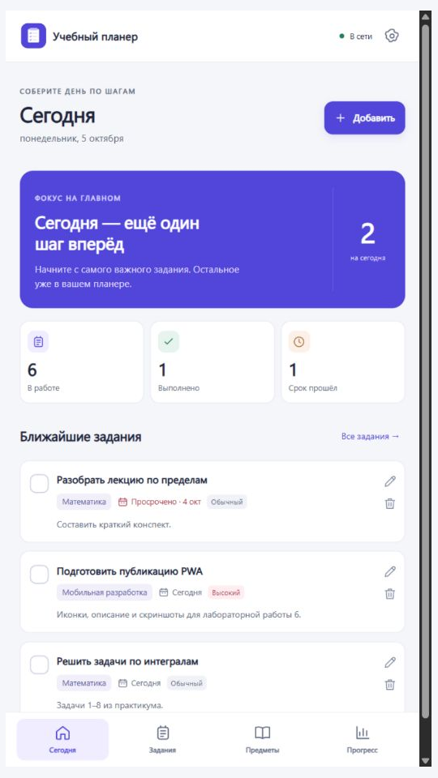
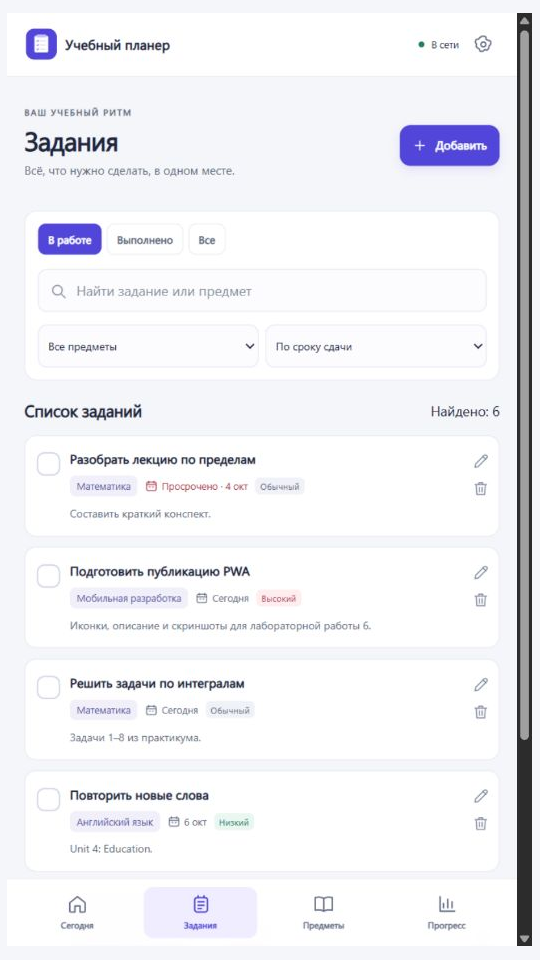
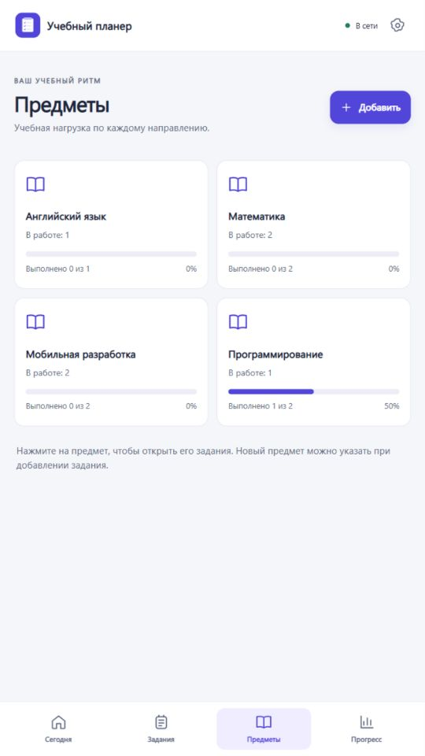
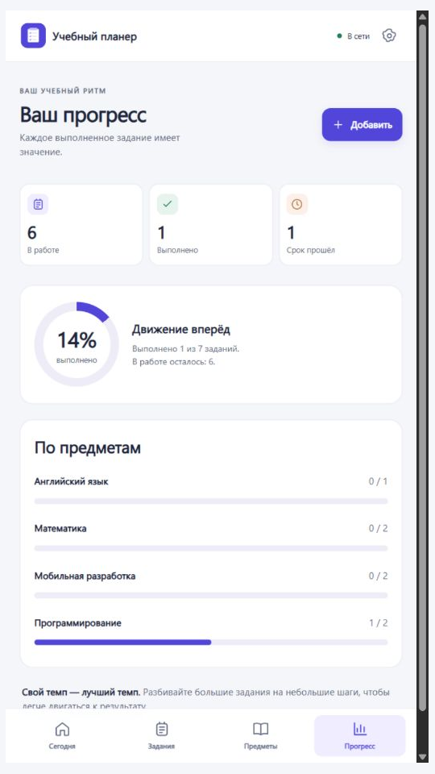

Задания и сроки
Добавляйте задачи по предметам, указывайте даты и выделяйте самое важное.
Все задания, сроки и учебный прогресс в одном приложении. Составьте план — и двигайтесь в своём темпе.

Добавляйте задачи по предметам, указывайте даты и выделяйте самое важное.
Отмечайте выполненное и следите за результатами по каждому предмету.
Находите задания, фильтруйте по предмету и сортируйте по приоритету.
Работайте без сети после первого открытия. Экспортируйте задания в JSON.
Скриншоты работающего приложения с демонстрационными заданиями.



Для первого открытия нужен интернет. На iPhone: Safari → «Поделиться» → «На экран Домой».
Открыть и установить ↗Откройте страницу на телефоне
Сравните две иконки и расскажите, какая лучше передаёт идею приложения.
Сравнить иконки →Обратная связь и сообщения об ошибках: GitHub Issues.